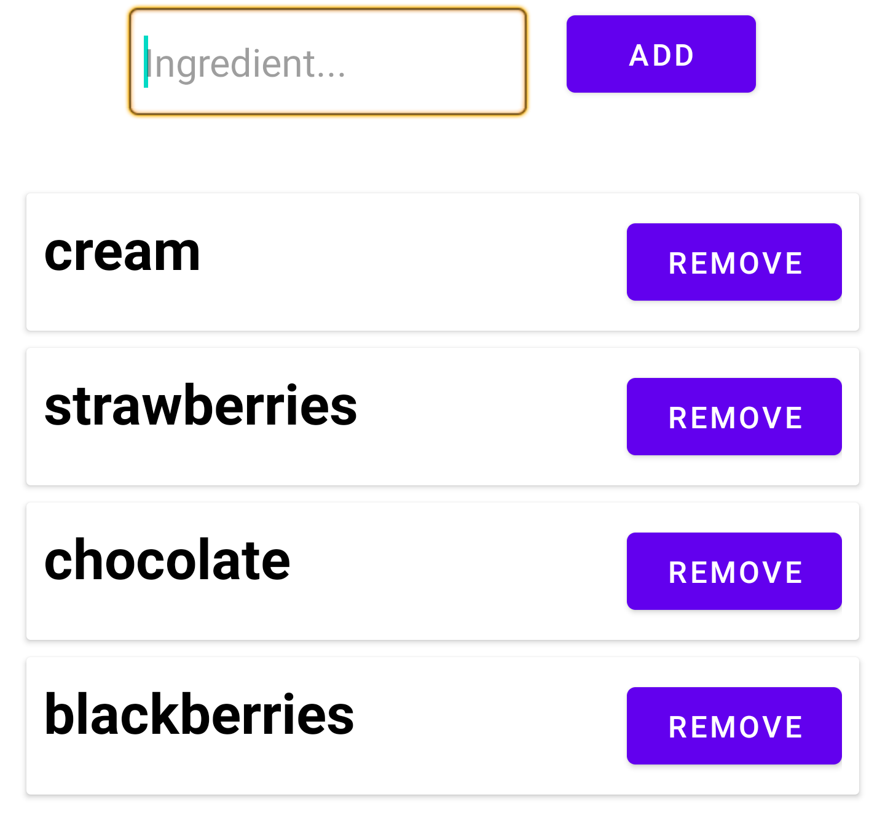
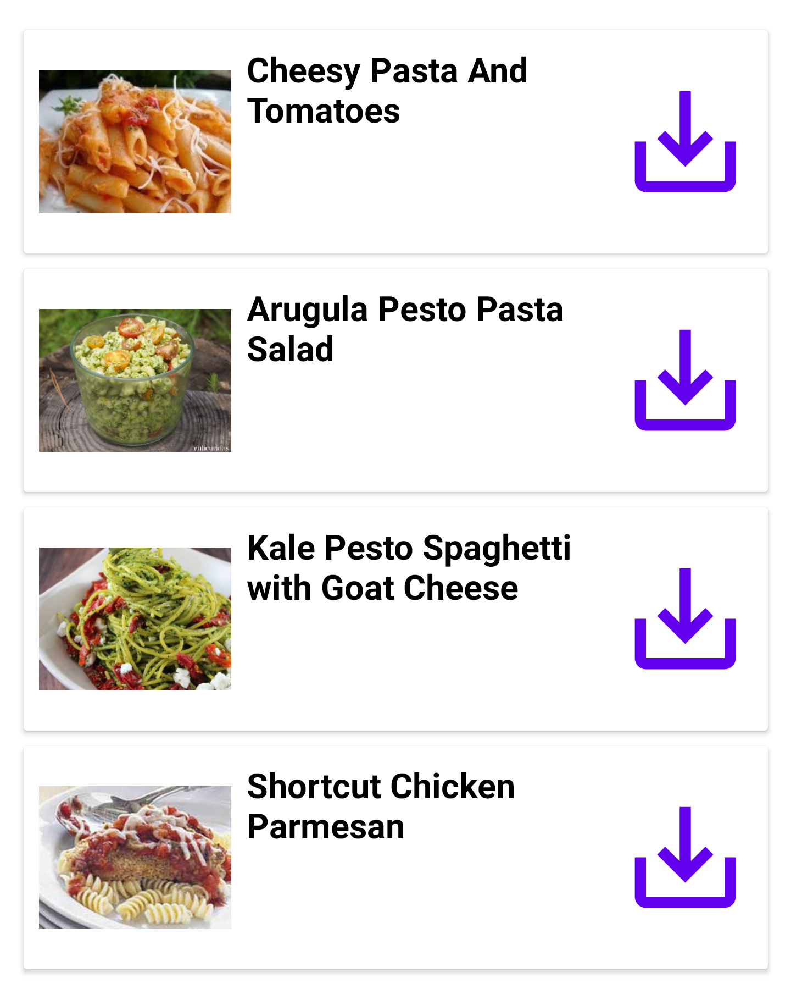

Searching for Recipes
Entering Ingredients:
To add ingredients to the recipe search, simply type an ingredient into the search bar and click "add".
Removing Ingredients:
To remove ingredients from the search, simply click the button titled "remove" attached to the ingredient that you wish to remove.
Finalising the Search:
To use the ingredients that you have entered to find recipes, click "Find Me Recipes!" at the bottom of the page.
Viewing Full Recipes:
To see a full recipe, simply click on the recipe that you would like and your browser will follow the link to this recipe.
 